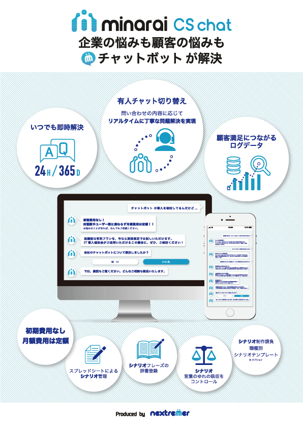
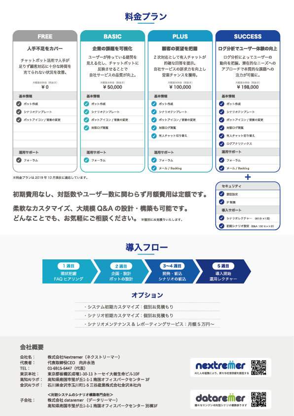
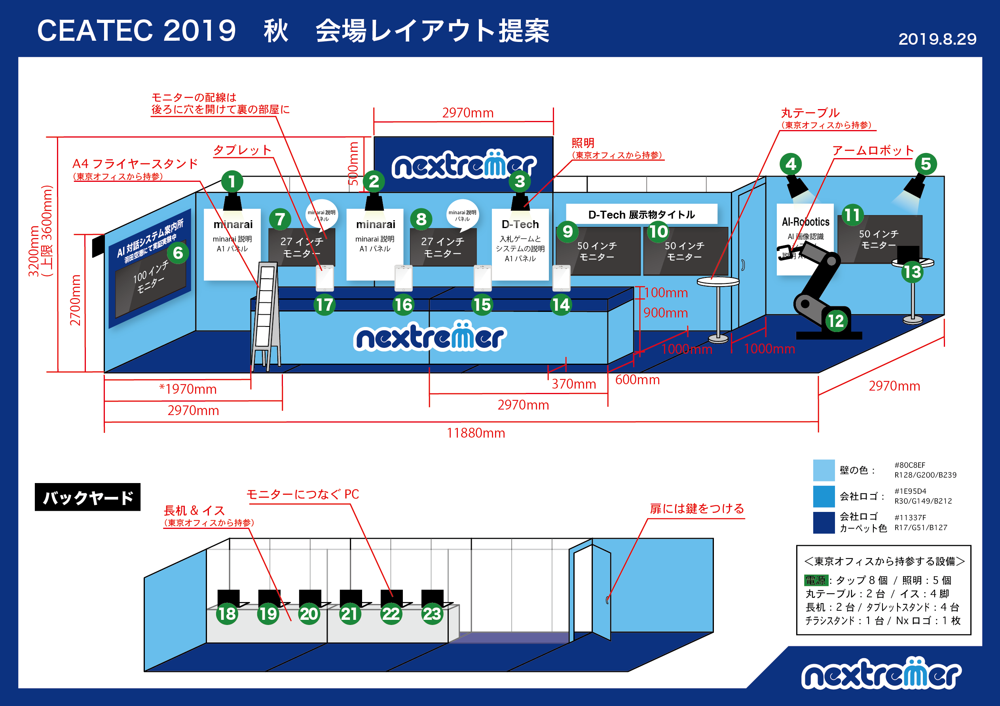

06
Web Design / Graphic Design
2018 Tokyo, Japan
サイトの管理運営・販促物制作・プロダクトのUI/UXデザイン
デザイン：Illustrator, Photoshop, After Effect, Figma
コーディング：HTML, CSS, JS(Vue.js, React.js) / フォーム：WordPress, salesforce
自然言語処理を自社開発し、それをプロダクトとして顧客の要望に合わせて落とし込み販売するSaasを開発するスタートアップで、自社Webサイトの運営、展示会での会場設計から印刷物のデザイン、サービス紹介のアニメーション、自社プロダクトのUI/UXデザイン、サイネージの筐体デザイン等、デザイン全般に携わる。
HONDAの車両や羽田空港、JRの池袋や新宿駅などチャット型の対話型案内Botを設置し、インバウンドやその土地に詳しくない方へのゲーム感覚で使うことができるプロダクトをデザインする中で、ソフト面、ハード面両方からアプローチしなければならないインクルーシブデザインについて深く考えることができた。
約2年間で、システムとコスト整備による運用改善をすることで、社内の情報発信をスピード感持って行えるよう、SEO対策も踏まえた上での改善に取り組み、コストを8割削減、問い合わせ受付件数を3倍以上伸ばす結果を得ることができました。
Webサイトデザイン
プロダクトのサイトや展示会などのスポットで利用するLPなどの施策を提案、デザイン、構築まで実施しリーチを上げるためのSEO対策や改善を行う。また、ブランディング定義や設定なども作成し、社内外から愛着を持ってもらえるような表現を制作しました。


サービス紹介用フライヤー
情報をできるだけわかりやすく整理し、ブランディング構築、デザインに落とし込みました。


CEATEC2019 会場レイアウト図
より、自分たちのプロダクトを伝えられる場として、CEATECに毎年ご招待いただき、出典させていただきました。
人の導線に配慮した通路・モニター・展示台の配置や大きさ、営業のしやすい角度・高さ、バックヤードやモニターの配線・電力量、遠くからでも目立つ看板など、予算に合った最大を検討しデザインを仕上げました。
